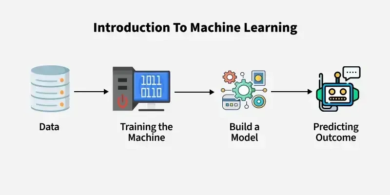
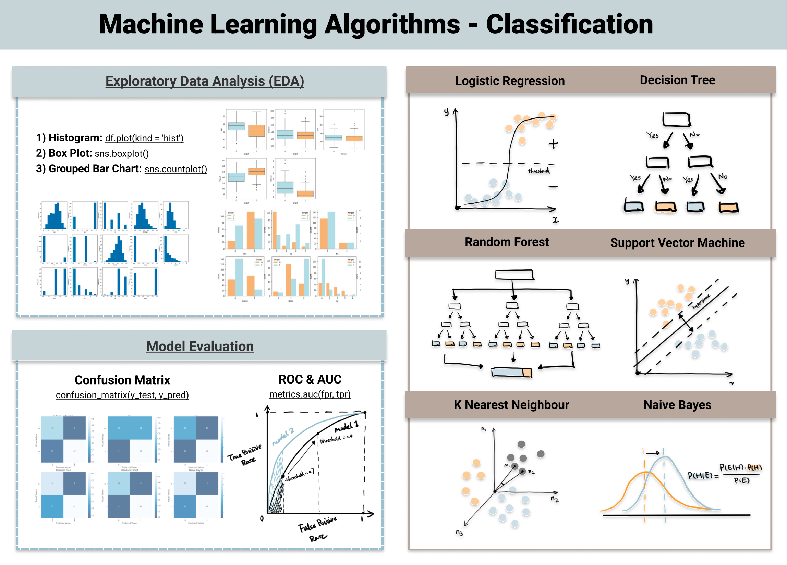
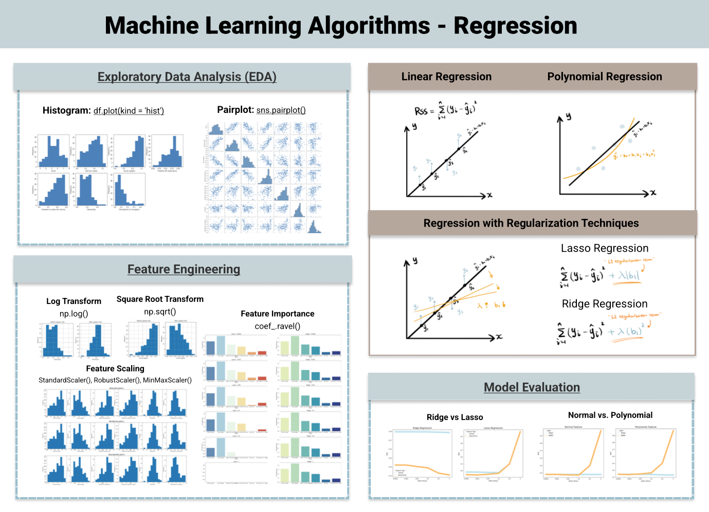

Machine Learning with tidymodels
Machine Learning!
In the last class, we talked about using tidymodels to perform dimension reduction, specifically using principal component analysis (PCA) to reduce the data from multiple features into a few number of summary features (PCs) that best represented the variance in the dataset. Variance is an important aspect of statistical analysis. Most statistical tests ask whether sources of variance in your data is a result of some manipulation or group comparison you are performing.
In this class, we will expand on these concepts my exploring some machine learning algorithms to predict outcomes in data. PCA is actually a type of machine learning too. I snuck it up on you before you even knew you were doing machine learning!
At the end of class you will be able to:
- Understand the purpose of data modeling, specifically machine learning classification
- Identify the packages and tools used to implement machine learning algorithms for data analysis
What is machine learning (ML)?
ML is a disciple of artificial intelligence (AI) that develops statistical algorithms that can learn from data and past experiences to identify patterns, draw inferences, and make predictions on unseen data.
 image credit
Why would you need machine learning?
Machine learning is useful when the biologic dataset for analysis is 1) large with many individual data points, 2) complex with many distinct features or measurements, or 3) when automated and reproducible analysis needs to be performed on the data or datasets.
Biologic data is getting more and more complex and relying only on simplistic statistical tests to evaluate the data may leave a lot of discovery behind because the investigator didn’t know what to look for. By applying machine learning algorithms to the data, the explorer can discover new sources of variance and thus biologic meaning in data.
Hypothesis Testing in ML and data modeling
Hadley Wickham highlights in his R for Data Science book that data modeling can be used in exploratory data analysis that help to generate new hypotheses about relationships in your data. However, data modeling can also be used to go beyond exploratory data analysis and into hypothesis-confirmation that seeks to test if a relationship between variables and an outcome is true or to determine the disease probability of a new patient.
For example, predicting the outcome or group membership of a new observation in a model classification trained algorithm is considered hypothesis confirmation. The question does this model predict diagnosis, for example, is being asked.
As a result, each observation (i.e. sample) can either be used for exploration or confirmation, not both. you can repeat different types of comparisons, correlations, or statistics on all the data as many times as you like in exploratory data analysis. In contrast, hypothesis confirmation can only use an observation ONCE. As soon as you use an observation twice, you’ve switched from confirmation to exploration.
For example, when trying to determine if the BRCA mutation was linked to breast cancer data was collected and used for hypothesis confirmation thus all the samples collected and used only to test this hypothesis.
The separation of hypothesis generation from hypothesis confirmation is necessary because to confirm a hypothesis you must use data independent of the data used to generate the hypothesis. Otherwise you will be over optimistic. There is absolutely nothing wrong with exploration, but you should never sell an exploratory analysis as a confirmatory analysis because it is fundamentally misleading.”
– Refernce: Hadley Wickham in (R for Data Science)
To get around this problem, datasets are often split into separate independent “pools” of data: a training set, and a testing set, and sometimes a third set called a validation set. We didn’t do that for PCA because that was exploratory data analysis not hypothesis confirmation. However, in this lecture we will predict classification which is a hypothesis confirmation analysis and thus needs independent data to generate the model and then to test (or confirm) the model.
Categories of Machine Learning Algorithms
Supervised learning occurs when the learning algorithm is presented with labelled example inputs, where the labels indicate the desired output. Supervised learning itself is composed of classification, where the output is categorical, and regression, where the output is numerical.
Unsupervised learning occurs when no labels are provided, and the learning algorithm focuses solely on detecting structure in unlabelled input data such as in PCA analysis and clustering single cell RNA sequencing data.
Note that there are also semi-supervised learning approaches that use labelled data to inform unsupervised learning on the unlabelled data to identify and annotate new classes in the dataset (also called novelty detection).
Reinforcement learning occurs when the learning algorithm performs a task using feedback from operating in a real or synthetic environment. For example, teaching an algorithm to play chess without instructions based on the results of each decision as wins and losses.
We will explore supervised learning algorithms.
Supervised Machine Learning Types
Classification: predicting categorical data. For example, using data to determine if a patient had heart disease based on a blood work panel. ML Algorithms used for Classification include:
logistic regression
decision tree
random forest (a type of decision tree)
k nearest neighbor
and many more

Regression: predicting numeric data. For example, using data to estimate an individual’s weight based on other biometic data (such as height and activity) or to predict the temperature tomorrow based on weather data. ML algorithms used for regression include:
Linear Regression
Lasso Regression
Polynomial Regression
and many more

For simplicity, we will only be looking at classification predictions.
ML Algorithms for Classification Prediction
Classification Prediction is one of the more simple ML pipelines and it can be further broken down into binary or multi-class depending on if it is a two group classification or if there are more than 2 groups. With more than two groups, there are a few alternative approaches that are used even for a binary model.
In simple terms, for example, in a three group classification
Group 1 vs all other groups –> yes or no
Yes –> assign Group 1
No –> Group 2 vs Group 3 –> yes or no
Yes -> assign Group 2
No –> assign Group 3
Alternatively,
Group 1 vs all other groups –> yes or no
Group 2 vs all other groups –> yes or no
Group 3 vs all other groups –> yes or no
Lets look at a little more detail into a few different classification algorithms.
Logistic Regression

Logistics regression is a classifier that uses the sigmoid function (∫) above to return the probability of a label as segregated based on some threshold. It calculates a probability that a observation falls into a specific category based on the pre-determined threshold. It is widely used when the classification problem is binary.
Random Forest

Random forest is a collection of decision trees. The steps of random forest prediction are:
- Subsample the data to make multiple training data sets so that the data is randomly sampled making it more robust and less dependent on the training dataset.
- Build multiple decision trees based on a subset of the data features. This way good predictors and bad predictors will be spread out and lead to more heavy weighting of the good predictors.
- Average the outcomes of each decision tree in a winner takes all approach to determine the classification (i.e. from 10 trees, 8 classifeid as group A and 2 classified as group B, thus group A “wins” as the classification). Some trees will be based on good predictors and some trees on bad predictors, but on average the correct classification wins out.
Random Forest has better generalization but can be less interpretable because of more layers that are added to each decision tree.
There are LOTS of different models and often data scientist test many models then compare them to one another to build a machine learning algorithm that performs well for a specific outcome.
We are just scratching the surface of what is out there. Check out the references below if you want to explore the details of more ML algorithms.
Model Validation
Lastly is model validation to determine how well the ML algorithm did at predicting the ground truth. As I mentioned at the beginning you have one set of data to train a ML model, and then you can test the reliability of the model based on data the model has never seen, thus the testing or validation datasets.
There are several metrics used to test the validity of a predictive model. Depending on what is being tested each of the validation metrics are weighted differently. For example, if you are developing an HIV test, you want to make sure false positives are extremely low because you don’t want people to think they have HIV when they indeed do not (called specificity). In other cases, you may be ok with some degree of false positives because you do not want to miss any true positives (i.e. you want to minimize false negatives, called precision). An example of this could be prophylactic treatment or preventative measures. It won’t hurt someone to get the intervention that is not actually positive, but would have large benefits to true positives and you don’t want someone to miss the intervention that it could really help.
First you start with a confusion matrix which is a matrix that counts the number of true positives (TP), false positives (FP), true negatives (TN), and false negatives (FN).
Confusion Matrix
| confusion matrix | TRUTH: Positive | TRUTH: Negative |
|---|---|---|
| Predicted Positive | True Positive (TP) | False Positive (FP) |
| Predicted Negative | False Negative (FN) | True Negative (TN) |
From the confusion matrix you can calculate these performance metrics
Accuracy: What percentage of all predictions are correct?
(TP + TN) / total predictions
correct predictions / total predictions
Precision: What percentage of predicted positives were correct?
TP / (TP + FP)
correctly predicted true positives / all predicted positives
Sensitivity: What percentage of TRUE positives were correct?
TP / (TP + FN)
correctly predicted true positives / actual true positives
Specificity: What percentage of TRUE negatives were correct?
TN / (TN + FP)
correctly predicted true negatives / actual true negatives
Finally, another common tool to evaluate a model’s performance is the Receiver Operating Characteristic (ROC) curve and a calculation of the area under that curve (AUC). This plots the FP ratet on the x-axis and the TP rate on the y-axis and then plots that curve for multiple models to compare them to one another. The model with the largest AUC is the best predictor. Meaning that the most TPs are captured with the fewest FPs.

Performing Machine Learning in R

Similar to tidyverse, tidymodels is a suite of tools used to easily apply machine learning algorithms to your data applying similar tidy principles that we’ve covered in class. We won’t go into as much detail as with tidyverse, but below is an overview of some of the included packages.
rsample: split data into training, testing, validation, and morerecipes: pre-process data for feeding into ML algorithmsparsnip: build the machine learning algorithmsworkflows: assemble workflows that integrates the recipes and algorithmstune&dials: refine the parameters of machine learning algorithms to help with optimizationyardstick: calculate performance metrics of machine learning algorithmsbroom: tidy the outputs machine learning algorithms and statistical measures into tidy-friendly syntax
In-class we will go through an example of these workflows. We will use the penguins dataset to predict the species based on the penguin biometric data.
Resources:
https://lgatto.github.io/IntroMachineLearningWithR/index.html
https://www.datacamp.com/blog/classification-machine-learning
https://www.stepbystepdatascience.com/ml-with-tidymodels
https://towardsdatascience.com/top-machine-learning-algorithms-for-classification-2197870ff501/
https://towardsdatascience.com/top-machine-learning-algorithms-for-regression-c67258a2c0ac/
Greener, J.G., Kandathil, S.M., Moffat, L. et al. A guide to machine learning for biologists. Nat Rev Mol Cell Biol 23, 40–55 (2022). link